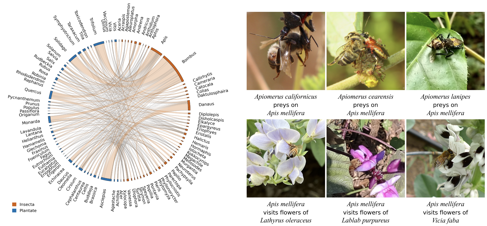
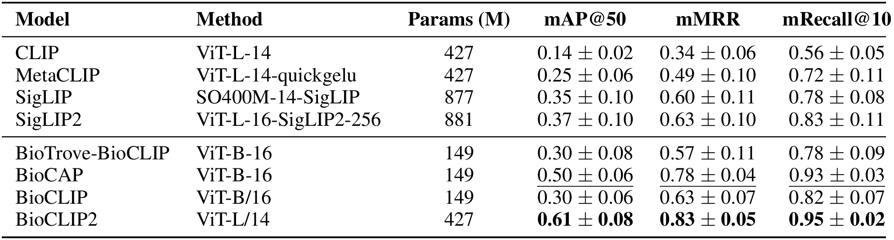
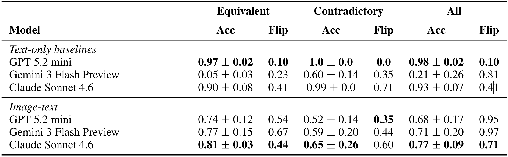

Abstract
While recent advances in vision-language models (VLMs) have spurred the development of domain-specific datasets and benchmarks, these often fail to assess fine-grained semantic understanding, allowing models to achieve high scores without robust visual grounding. We address this evaluation gap through the lens of biotic interactions: directional, asymmetric relationships between organisms (e.g., wasp parasitizes caterpillar vs. caterpillar parasitizes wasp). This relational complexity yields naturally adversarial instances that expose superficial reasoning in current VLMs. To this end, we introduce BioInteract, the largest multimodal dataset for evaluating VLM robustness on real-world biodiversity challenges. Curated from iNaturalist and validated against scientific literature, the dataset contains 15.4K unique interactions spanning 6.5K taxa across 256K images. Each interaction is structured as a source-relation-target triplet, enabling controlled semantic perturbations. We further introduce BioInteract100, an adversarial image retrieval benchmark revealing that state-of-the-art VLMs suffer from severe consistency gaps and are highly brittle to relation-direction reversals. BioInteract provides a faithful evaluation of multimodal AI, while encouraging the development of robust systems for ecological research.
Dataset description
BioInteract annotations enumerate 27 fields provided in Parquet format; the dataset is openly available (for download and browsing) on HuggingFace Datasets.

(left) BioInteract top 100 most frequent taxa and their interactions. The dataset is centered around Insecta-Plantae interactions. (right) Examples illustrating ecological networks in BioInteract. Top row showcases predatory interactions of the honeybee Apis mellifera with rove beetles (genus Apiomerus); while bottom row showcases its plant preferences, including associations with families such as Fabaceae.
Dataset collection
Evaluations
Our evaluation considers how predictions change under semantic perturbations, while the visual input remains constant. We introduce a ranking task similar to INQUIRE, which fixes images for each query and uses models like GPT-4o to improve over initial text-to-image CLIP-style retrieval. We, thus, measure fine-grained semantic understanding in embedding similarity and binary (yes/no) questions.

Performance on fine-grained semantic understanding of biotic interaction queries for different models. We report the mean Average Precision at k (mAP@k), mean Reciprocal Rank (mMRR), and mean Recall at k (mRecall@10) computed over semantically equivalent query variants. Bold and underlined entries indicate the best and the second best results, respectively.

Performance on different general-purpose proprietary models grouped per query perturbation type.